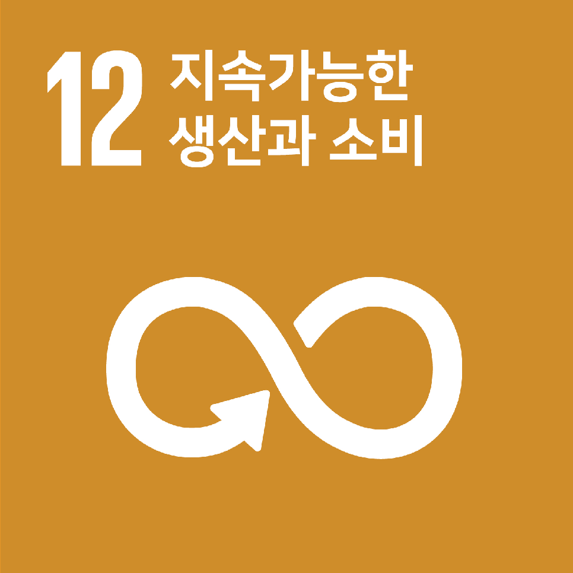

기업 분석 및 SDGs 연계
기업 소개
에어키친은 하노이 지역 소상공인의 낮은 매출 및 브랜딩 한계와 배달·포장 과정에서 발생하는 음식물 쓰레기 및 일회용 플라스틱 폐기물 증가 문제를 해결하기 위해 공유(센트럴) 키친과 온라인 플랫폼을 통해 메뉴 개발·브랜딩·원재료 유통을 지원하고 저수수료 판매 채널과 친환경(종이·생분해성) 포장 대체를 제공합니다.
SDGs 연계
주요 목표

SDG 8: 양질의 일자리와 경제 성장
소상공인 매출 증대·비용 절감으로 경제적 기회 확대와 생계 안정에 기여

SDG 12: 지속가능한 소비 및 생산
음식물 쓰레기 저감과 일회용 플라스틱 대체를 통한 지속가능한 생산·소비 방식 촉진
세부 목표
- 8.5: 완전하고 생산적인 고용과 양질의 일자리 확보
- 12.5: 폐기물 예방·감소·재활용 촉진
사회적 가치 창출 포인트
에어키친의 가치는 소상공인의 수익성 문제와 배달·포장으로 인한 환경 문제를 동시에 완화하는 데서 창출됩니다. 공유 키친과 플랫폼으로 소상공인의 성장을 돕고, 친환경 포장재 도입으로 플라스틱 배출을 줄입니다.
AI 해설: 동네의 여러 식당이 각자 장을 보지 않고 공동 주방과 통일된 포장을 쓰며 운영비와 쓰레기를 함께 줄이는 것과 비슷합니다.